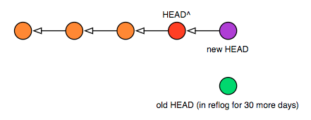
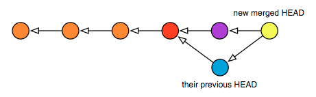

Doing a soft reset
If you use the --soft option to reset, this is the same as simply changing your HEAD reference to a different commit. Your working tree changes are left untouched. This means the following two commands are equivalent:
$ git reset --soft HEAD^ # backup HEAD to its parent, # effectively ignoring the last commit $ git update-ref HEAD HEAD^ # does the same thing, albeit manually
In both cases, your working tree now sits on top of an older HEAD, so you should see more changes if you run status. It’s not that your files have been changed, simply that they are now being compared against an older version. It can give you a chance to create a new commit in place of the old one. In fact, if the commit you want to change is the most recent one checked in, you can use commit --amend to add your latest changes to the last commit as if you’d done them together.
But please note: if you have downstream consumers, and they’ve done work on top of your previous head — the one you threw away — changing HEAD like this will force a merge to happen automatically after their next pull. Below is what your tree would look like after a soft reset and a new commit:

And here’s what your consumer’s HEAD would look like after they pulled again, with colors to show how the various commits match up:
